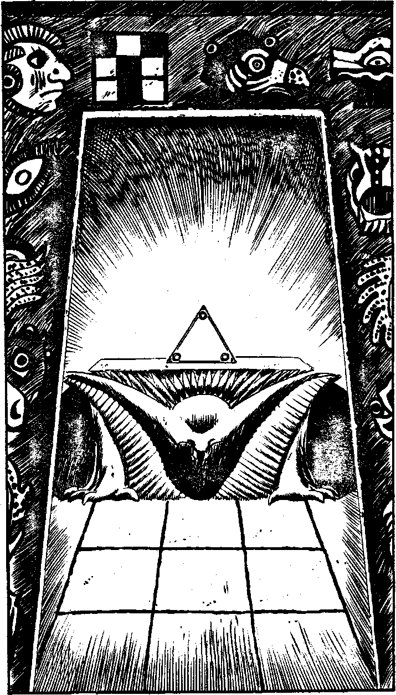

311
The two Jaguar Knights stagger back and fall to the ground under the effect of your Thinkstrikes. Their minds were elsewhere, on the spectacle on the pyramid. No one notices their fate and you dash through the curtained doorway into a bewildering mass of corridors and large storerooms containing stocks of maize, sculpted gold and so on. Eventually you come to a wide corridor, lined with friezes, depicting scenes of Aztec mythology. At its end is a richly decorated portal leading into a large room. When you are nearer, you can see a large altar at the end of the room. Upon it lies a translucent white triangle, small circles embedded in each corner, giving off a bright white radiance. It is a segment of the Rack. In between you and the altar, the floor is a checkerboard of nine, six-foot-square stone slabs, laid out in a square. Directly ahead of you lies the first three.Will you:
| Step out onto the left hand slab? | Turn to 330 |
| The middle slab? | Turn to 340 |
| The right hand slab? | Turn to 352 |